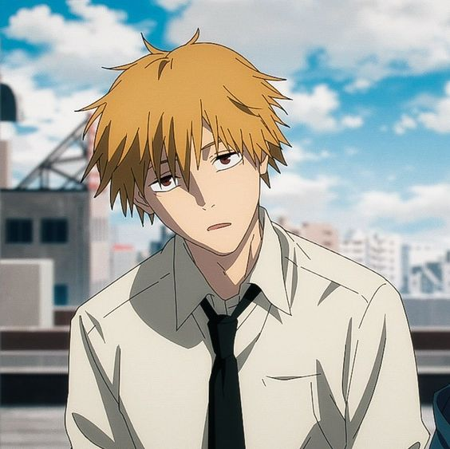

Characters/voice
Denji

-
- Toya, Kikunosuke (Japanese)
- Inoue, Marina (Japanese)
- Colt Levy, Ryan (English)
- Singh, Mosè (Italian)
- Mottola, Patrizia (Italian)
- Friedland, Alex (German)
- Flechtner, Derya (German)
- Bougleux, Erick (Portuguese BR)
- Reignoux, Donald (French)
- Darazi, Estelle (French)
- Treviño, Emilio (Spanish)
- Gómez Jiménez, Joel (Spanish)
Hayakawa, Aki

-
- Japanese: Toya, Kikunosuke
- English: Colt Levy, Ryan
- Japanese: Inoue, Marina
- Portuguese (BR): Bougleux, Erick
- French: Reignoux, Donald; Darazi, Estelle
- German: Friedland, Alex; Flechtner, Derya
- Italian: Singh, Mosè; Mottola, Patrizia
- Spanish: Treviño, Emilio; Gómez Jiménez, Joel
Makima

-
- Japanese: Kusunoki, Tomori
- English: Yeung, Suzie
- Portuguese (BR): Viotti, Luísa
- French: Grosbois, Victoria
- Spanish: Gris, Gaby
- German: Kayalar, Özge
- Italian: Ponticelli, Benedetta
Power

-
- Japanese: Fairouz Ai
- English: Wiedenheft, Sarah
- Portuguese (BR): Rodrigues, Pamella
- French: Khakhoulia, Zina
- Spanish: Langarica, Erika
- German: Trunte, Franziska
- Italian: Felli, Martina
Angel Devil

-
- Japanese: Uchida, Maaya
- English: Mongillo, Casey
- Spanish: Suárez, Luis Leonardo
- French: Bismuth-Bienaimé, Gabriel; Follare, Wagner
- Portuguese (BR): Tamburello, Martina
- Italian: Wagner
Arai, Hirokazu

-
- Japanese: Yashiro, Taku
- English: Greene, Jarrod
- English: Greene, Jarrod
- Spanish: Miranda, Cuauhtémoc
- French: Goffette, Kévin
- Italian: Maestroni, Omar
Bat Devil

-
- Japanese: Matsuda, Kenichirou
- German: Stritzel, Oliver
- English: Kunda, Gabe
- French: Desroses, Thierry
- Spanish: Osorio, Dan
- Portuguese (BR): Lopes, Guilherme
- Italian: De Angelis, Francesco
Beam

-
- Japanese: Hanae, Natsuki
- English: Snow, Derick
- Spanish: Bastidas, Iván
- French: Tomassian, Alexis
- Portuguese (BR): Santhos, Leonardo
- Italian: Zanotti, Matteo
Fox Devil

-
- japanese: Kaida, Yuuko
- English: Van Sistine, Natalie
- Spanish: Casas, Adriana
- French: Cadol, Françoise
- Italian: Vadacca, Maddalena
- Portuguese (BR): Coutinho, Márcia
Future Devil

-
- Spanish: Obregón, Alfonso
- English: McDonald, Landon
- French: Le Minoux, Martial
- Portuguese (BR): Briggs, Guilherme
- Spanish: Roca, Jaime
- Italian: De Mojana, Matteo
- Japanese: Hiroki
Galgali

-
- Japanese: Uchida, Yuuya
- English: Bangle, Josh
- Spanish: Basurto, Alfredo Gabriel
- French: Guetat, Nessym
- Portuguese (BR): Sierpe, Fernando
- Italian: Lomazzi, Edoardo
Higashiyama, Kobeni

-
- Japanese: Takahashi, Karin
- English: Apprill, Bryn
- French: Marié, Émilie
- Portuguese (BR): Marie, Jeane
- Spanish: García Sánchez, Paola
- Italian: Maniglio, Giulia
Himeno

-
- Japanese: Ise, Mariya
- English: Barr, Katelyn
- Spanish: Mendoza, Mireya
- French: Perret, Marie
- German: Bauer, Alice
- Italian: Francese, Chiara
Kishibe

-
- Japanese: Tsuda, Kenjirou
- English: Douglas, Jason
- Portuguese (BR): Júlio, Ronaldo
- French: Rehlinger, Boris
- German: Berenz, Johannes
- Italian: D'Errico, Alessandro
- Spanish: Franco, Víctor
Kurose, Yuutarou

-
- Japanese: Kawanishi, Kengo
- English: Gibbs, Adam
- French: Douieb, Oscar
- Portuguese (BR): Tatini, Adrian
- Italian: Vivolo, Ezio
- Spanish: Campos, Octavio
Pochita

-
- Japanese: Izawa, Shiori
- English: Seidel, Lindsay
- French: Facundo, Marie
- Spanish: Guevara, Amellalli
- German: Uhlig, Charlotte
- Portuguese (BR): Menezes, Bia
- Italian: Giorgio, Elisa
Reze

-
- Japanese: Ueda, Reina
- English: Tipton, Alexis
- Spanish: Ángeles, Jessica
- French: Soares, Clara
- Portuguese (BR): Guioli, Aline
- Italian: Sorrentino, Katia
Staff
- Seshimo, Keisuke (Producer)
- Nakai, Yuusuke (Assistant Producer)
- Nakayama, Ryuu (Director, Episode Director, Storyboard, Key Animation)
- Koizumi, Kisuke (Sound Director)
- Enokido, Shun (Episode Director, Storyboard, Key Animation)
- Goshozono, Shouta (Episode Director, Storyboard, Key Animation)
- Hiraoka, Masanobu (Episode Director, Storyboard, Editing, Key Animation, Special Effects)
- Kamiya, Yuki (Episode Director, Storyboard, Key Animation, Editing, Special Effects, Color Setting)
- Kaneko, Takahiro (Episode Director)
- Nakazono, Masato (Episode Director, Storyboard)
- Satou, Takeshi (Episode Director)
- Takada, Yousuke (Episode Director, Animation Director, Key Animation)
- Tanaka, Hironori (Episode Director, Storyboard, Animation Director, Key Animation)
- Yamashita, Shingo (Episode Director, Storyboard, Director of Photography, Editing)
- Yatabe, Touko (Episode Director, Storyboard)
- Yoshihara, Tatsuya (Episode Director, Storyboard, Key Animation)
- Zhou, Haosong (Episode Director, Storyboard, Key Animation, Color Setting, Editing, Color Design)
- coalowl (Episode Director, Storyboard, Key Animation)
- Seko, Hiroshi (Script, Series Composition)
- Stocker, Kevin (Script)
- Kamada, Shinpei (Storyboard, Key Animation)
- Kamiya, Tomomi (Storyboard)
- Kariya, Hitomi (Storyboard, Background Art, In-Between Animation, Key Animation, Color Setting)
- Watanabe, Keiichirou (Storyboard, Key Animation)
- 100-kai Outo (Theme Song Arrangement)
- Aimer (Theme Song Performance)
- Avu-chan (Theme Song Lyrics, Theme Song Composition)
- Eve (Theme Song Performance, Theme Song Composition, Theme Song Lyrics)
- Kanaria (Theme Song Performance)
- Maximum the Hormone (Theme Song Performance)
- Numanou, Tomoki (Theme Song Arrangement)
- PEOPLE 1 (Theme Song Performance)
- TK from Ling tosite sigure (Theme Song Performance)
- Tsuneta, Daiki (Theme Song Arrangement)
- Vaundy (Theme Song Arrangement, Theme Song Composition, Theme Song Performance, Theme Song Lyrics)
- Yonezu, Kenshi (Theme Song Performance, Theme Song Arrangement, Theme Song Composition, Theme Song Lyrics)
- ZUTOMAYO (Theme Song Arrangement, Theme Song Performance)
- Ziyoou-vachi (Theme Song Performance)
- ano (Theme Song Performance)
- syudou (Theme Song Performance)
- 10＋10 (2nd Key Animation, Animation Director, Key Animation)
- Campos, Octavio (ADR Director)
- Dawn-Claude, René (ADR Director)
- Faure, Benjamin (Key Animation)
- Fujimori, Ao (2nd Key Animation)
- Fujimoto, Tatsuki (Original Creator)
- Fujimoto, Kouki (Key Animation)
- Fukushima, Isamu (Key Animation)
- Gem (Key Animation)
- Geso, Ikuo (Key Animation)
- Gouroku, Hiroshi (Background Art)
- Hamazaki, Hideki (Key Animation, Animation Director)
- Harashina, Daiki (Key Animation)
- Hasegawa, Hitomi (2nd Key Animation, Animation Director)
- Hashimoto, Haruna (Key Animation)
- Hattori, Satoshi (Key Animation, Animation Director)
- Hiroe, Keisuke (Key Animation)
- Homura, Minori (2nd Key Animation)
- Huang, Chengxi (Key Animation)
- Hung, Fei (Key Animation)
- Ideue, Yoshihide (Key Animation)
- Iida, Tsuyoshi (Key Animation, Animation Director)
- Ishii, Yumi (Setting Manager)
- Ishitsuka, Sora (2nd Key Animation, In-Between Animation)
- Isuta (Key Animation)
- Itou, Teppei (Director of Photography)
- Itou, Kiminori (Chief Animation Director)
- Iwazawa, Tooru (Key Animation)
- Kai, Yasuyuki (Key Animation)
- Kim, Daniel (Key Animation)
- Kitamura, Shinya (Animation Director, Assistant Animation Director)
- Kobayashi, Keisuke (Key Animation)
- Komatsu, Eiji (Key Animation)
- Kouno, Toshiya (Animation Director, 2nd Key Animation)
- Kozuma, Shinsaku (Key Animation)
- Kurita, Shinichi (Key Animation)
- Kurosaki, Hayato (Key Animation, 2nd Key Animation)
- Kuwahara, Tsuyoshi (Key Animation)
- Le Madic, Yann (ADR Director)
- Lee, William (Key Animation)
- Lu, Curie (Key Animation, 2nd Key Animation)
- Lu, Tam (Key Animation)
- Masaki, Kei (Key Animation)
- Masui, Naoko (Key Animation)
- Matsuura, Riki (Key Animation, Assistant Animation Director, Chief Animation Director, Animation Director)
- McFarland, Mike (ADR Director)
- Melnikova, Polina (Background Art)
- Minoshima, Ayaka (Key Animation)
- Miya, Kanae (Key Animation)
- Miyahara, Youhei (Layout)
- Miyajima, Naoki (Key Animation)
- Moaang (Key Animation)
- Moftah, Mahmoud (2nd Key Animation)
- Mori, Hisashi (Key Animation)
- Muranaga, Yuki (Key Animation)
- Muraoka, Naotake (Production Manager, Production Assistant)
- Myoun (Key Animation)
- Nagai, Tatsurou (Key Animation)
- Nagano, Yuudai (Key Animation)
- Nagaya, Seishirou (Key Animation)
- Nakajima, Mika (Background Art)
- Nakanishi, Yurika (2nd Key Animation)
- Nakano, Katsuhiro (Sound Effects)
- Nakano, Naomi (Color Design)
- Nakashige, Shunsuke (2nd Key Animation, Key Animation)
- Nakayama, Tomoyo (2nd Key Animation, Animation Director, Key Animation)
- Niinuma, Takuya (Key Animation, Animation Director)
- Noma, Chikako (Key Animation)
- Norifumi, Kugai (Key Animation)
- Odasaki, Keiko (2nd Key Animation)
- Oh, Su-Min (Key Animation, 2nd Key Animation)
- Okuda, Teppei (Key Animation, 2nd Key Animation)
- Omine, Teruyuki (2nd Key Animation)
- Oonuki, Kentarou (Background Art)
- Ootsuka, Manabu (Planning)
- Riku (Animation Director, 2nd Key Animation, Key Animation)
- Saita, Hiroyuki (Chief Animation Director, Animation Director)
- Sakazume, Takahito (Key Animation)
- Santhos, Leonardo (ADR Director)
- Satou, Toshiyuki (Key Animation)
- Satou, Ayaka (Key Animation, Assistant Animation Director, 2nd Key Animation)
- Sekine, Yuzuki (2nd Key Animation)
- Shigetsugu, Souta (Key Animation)
- Shimazaki, Takao (Planning)
- Shimizu, Takako (Animation Director, Chief Animation Director)
- Shimizu, Yuusuke (Animation Director)
- Shouichi (Key Animation, Animation Director, 2nd Key Animation)
- Sudou, Yumiko (Background Art)
- Sugita, Shuu (Key Animation)
- Sugiyama, Kazutaka (Character Design, Chief Animation Director)
- Takada, Naoki (Background Art)
- Takagi, Harumi (Animation Director, 2nd Key Animation, Key Animation)
- Takashima, Hiroyuki (Key Animation)
- Takeda, Yuusuke (Art Director)
- Takeshi, Noda (2nd Key Animation)
- Tanabe, Takaaki (2nd Key Animation)
- Thoenes, Christoph (Key Animation)
- Tokudo, Daisuke (Key Animation)
- Tomioka, Kaito (Key Animation, 2nd Key Animation)
- Tomioka, Takashi (Key Animation)
- Tomita, Yoshikazu (Key Animation)
- Tsuji, Ayaka (Key Animation)
- Uda, Sakiko (Key Animation)
- Usami, Tetsuya (Background Art)
- Ushio, Kensuke (Music)
- Vercreek (Key Animation)
- Yajima, Yousuke (Chief Animation Director, Assistant Animation Director, Animation Director, Key Animation)
- Yamada, Shinya (Key Animation)
- Yamakado, Ikuo (Key Animation, Animation Director)
- Yamashita, Yuuki (Key Animation)
- Yamazaki, Souta (2nd Key Animation, Chief Animation Director, Animation Director, Key Animation, Digital Paint)
- Yokota, Masahiro (Production Manager)
- Yooto (Key Animation)
- Yoshitake, Masato (Editing)